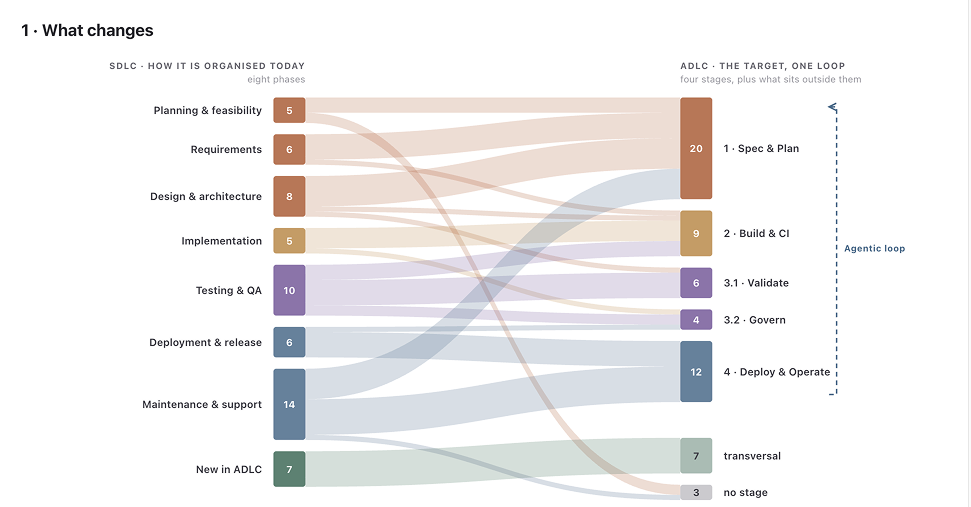
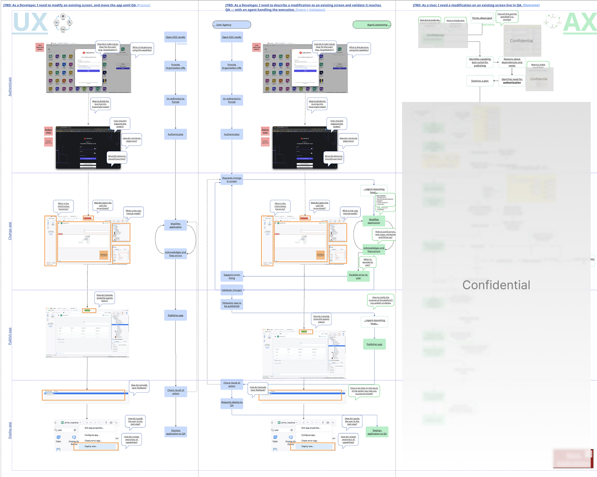
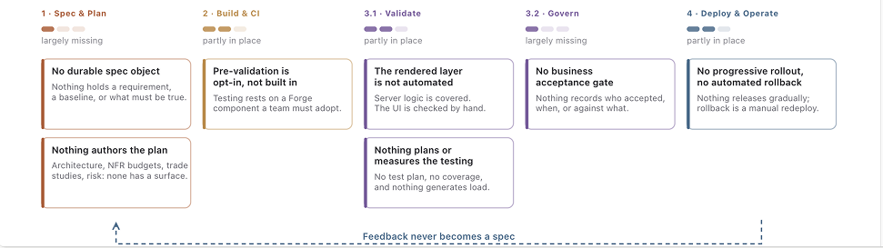
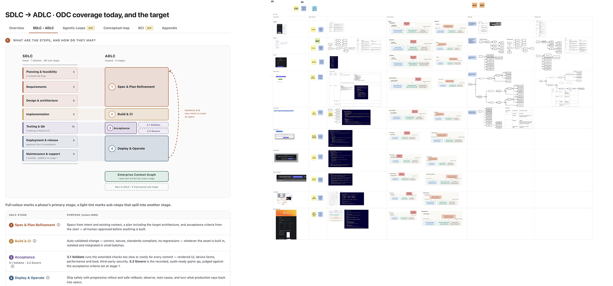

Co-pioneering the UX foundation for OutSystems' next chapter: from a platform for applications to an agentic systems platform — designing how external agents interact with the platform today, and how we build software with agents tomorrow.
OutSystems was evolving from a platform primarily designed for humans building applications into an agentic systems platform. That was not a single feature change: it was a company-level shift that required us to rethink how agents interact with the platform and how software development itself happens when agents become active participants.
The challenge was therefore not simply to add agents to existing workflows. The shift introduces new questions around control, visibility, observability, blast radius, guardrails, trust, transparency and recovery — many of which did not have established UX patterns to build on.

From SDLC to ADLC, a nuanced transition
I started by researching what Agentic Experience means, what it encompasses, and how it should fit within the OutSystems platform. The goal was to establish a useful UX framing before the organisation had an established AX practice or a mature set of patterns to follow.
I explored how the same journey could behave under different AX designs, and built an internal tool that could simulate agentic interactions with real tools such as Claude. This made it possible to move beyond static diagrams and examine how different interaction models affected the behaviour and performance of an agent interacting with the platform.

UX, UAX, AX and the transition for an existing journey
In parallel, the development lifecycle needs to evolve. In a conventional CI/CD model, application lifecycle management covers areas such as deployment, monitoring, testing and observability. ADLC applies those concerns to agentic development — where agents are actively involved in producing the software.
I am driving the UX side of this work from the PM-defined product vision: researching the market, mapping user journeys, analysing the current product, and translating the product vision into an experience model.

Analysis of the SDLC product readiness
A key part of the work is mapping where the current product already supports the lifecycle, where agentic development changes the job to be done, and where new UX, MCP and AX capabilities are required.
The hardest part is the amount of definition that does not yet exist. Making a lifecycle agentic-native is more than turning each SDLC phase into an agent-driven equivalent; it changes the relationship between the developer, the system and the agent.
The experience cannot treat agents as simply another automation mechanism. As agents gain more autonomy, the UX needs to make their actions, scope, consequences and state sufficiently visible for people to supervise and intervene when necessary.
The work is still early, so the main outputs are foundational rather than a finished pattern library or shipped feature set. I have focused on making the problem space explicit, connecting product needs to user jobs, and creating artefacts that PM, UX, Architecture and Engineering can use to shape the product together.

Research artifacts. Redacted due to confidential information
AX and ADLC are ongoing initiatives, so the strongest signal so far is not adoption of a shipped feature but influence on product direction. By surfacing experience risks and gaps early, the UX work is helping PM shape the roadmap around what an agentic-native transition means for existing users.
The objective is to establish foundations that can support the next stage of product definition: clearer agentic interaction models, lifecycle journeys, UX patterns and the supporting capabilities needed to make agentic development observable and governable.